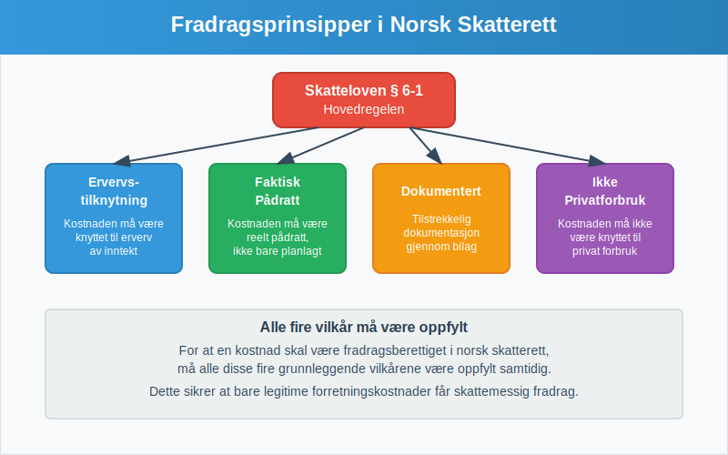
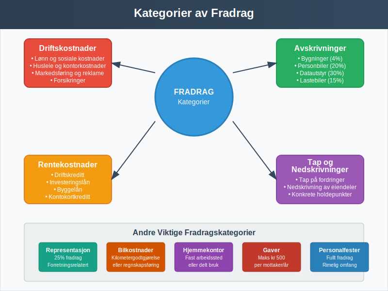
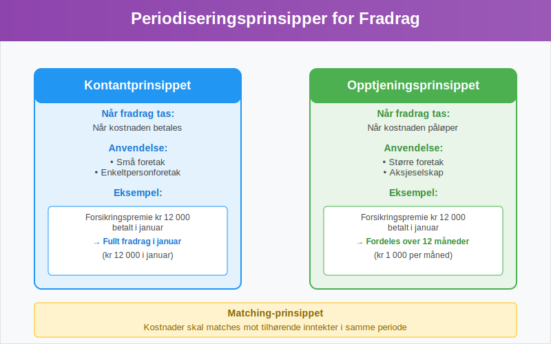
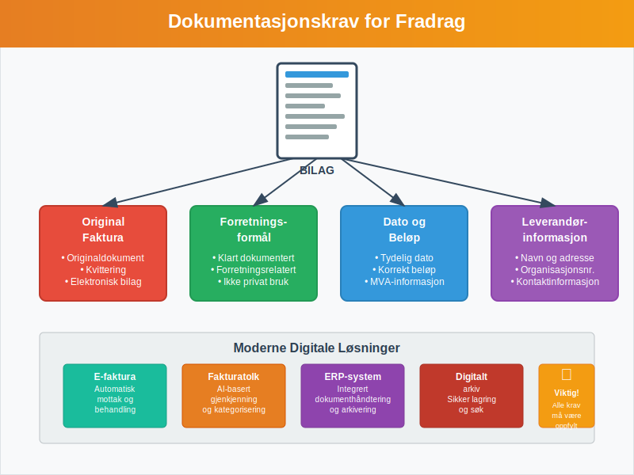
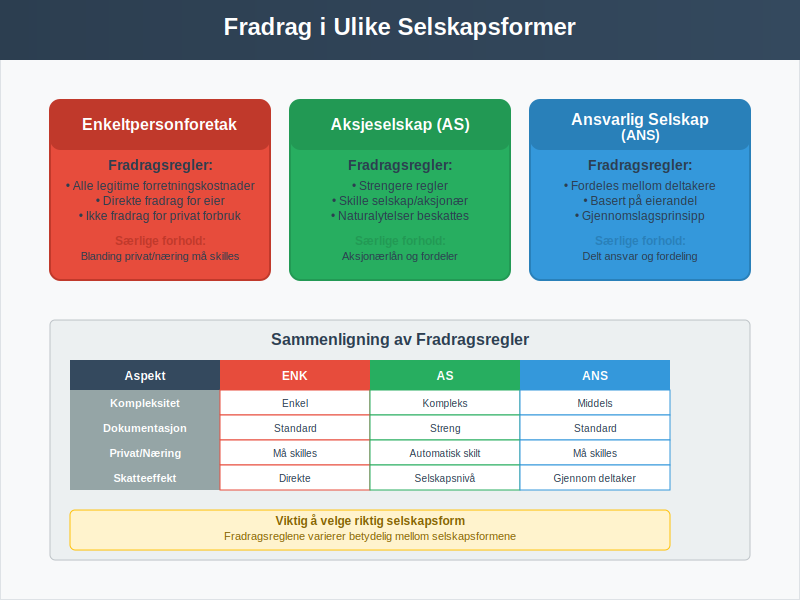

Fradrag i regnskap og skatterett er kostnader eller utgifter som kan trekkes fra inntektene for å redusere det skattepliktige grunnlaget. Dette er et fundamentalt konsept som påvirker både bokføring og skatteplanlegging for alle typer virksomheter i Norge.
For en dypere forståelse av minstefradrag, se Hva er minstefradrag?.
For mer informasjon om fordeling av fradrag mellom ektefeller, se Ektefellefordeling.
For en grundigere innsikt i personfradrag, se Personfradrag.
For å lære hvordan du faktisk fradragsfører kostnader i regnskapet, se Hva er Fradragsføre?.
Grunnleggende Prinsipper for Fradragsrett
Fradragsretten i norsk skatterett bygger på flere grunnleggende prinsipper som regulerer hvilke kostnader som kan trekkes fra i skatteregnskapet. Disse prinsippene sikrer at bare legitime forretningskostnader får skattemessig fradrag.

Hovedregelen for Fradrag
Ifølge skatteloven § 6-1 kan fradrag kreves for kostnader som er pådratt for å erverve, sikre og vedlikeholde skattepliktig inntekt. Dette innebærer at kostnaden må ha en klar tilknytning til virksomhetens inntektsgivende aktivitet.
Vilkår for Fradragsrett
For at en kostnad skal være fradragsberettiget, må følgende vilkår være oppfylt:
- Ervervstilknytning: Kostnaden må være pådratt i forbindelse med erverv av inntekt
- Faktisk pådratt: Kostnaden må være reelt pådratt, ikke bare planlagt
- Dokumentert: Kostnaden må være tilstrekkelig dokumentert gjennom bilag
- Ikke privatforbruk: Kostnaden må ikke være knyttet til privat forbruk
Kategorier av Fradrag
Fradrag kan deles inn i flere hovedkategorier basert på deres karakter og regnskapsmessige behandling. Hver kategori har sine egne regler og begrensninger.

1. Driftskostnader
Driftskostnader utgjør den største kategorien av fradragsberettigede kostnader. Dette inkluderer alle løpende kostnader knyttet til virksomhetens daglige drift.
Eksempler på driftskostnader:
- Lønn og sosiale kostnader
- Husleie og kontorkostnader
- Telefon og internett
- Markedsføring og reklame
- Forsikringer
- Reparasjoner og vedlikehold
2. Avskrivninger
Avskrivninger representerer den årlige verdireduksjonen av anleggsmidler. Dette er en spesiell form for fradrag som fordeler anskaffelseskostnaden over eiendelens levetid.
| Avskrivningsgruppe | Avskrivningssats | Eksempler |
|---|---|---|
| Gruppe A | 4% | Bygninger, anlegg |
| Gruppe B | 20% | Personbiler, inventar |
| Gruppe C | 15% | Lastebiler, busser |
| Gruppe D | 30% | Datautstyr, programvare |
3. Rentekostnader
Rentekostnader på lån som er tatt opp for virksomheten er som hovedregel fradragsberettigede. Dette gjelder både renter på:
- Driftskreditt
- Investeringslån
- Byggelån
- Kontokortkreditt (forretningsrelatert)
4. Tap og Nedskrivninger
Tap på fordringer og nedskrivninger av eiendeler kan gi fradrag når visse vilkår er oppfylt. For debitortap må det foreligge konkrete holdepunkter for at fordringen ikke kan inndrives.
5. Minstefradrag
Minstefradrag er et standardisert fradrag som alle lønnstakere og pensjonister automatisk får i sin selvangivelse. Dette fradraget forenkler skattesystemet ved å dekke vanlige arbeidsrelaterte utgifter uten krav om detaljert dokumentasjon.
Hovedtrekk ved minstefradrag:
- Lønnsinntekt: 46% av inntekt, maksimalt kr 104 850 (2024)
- Pensjonsinntekt: 31% av inntekt, maksimalt kr 90 800 (2024)
- Automatisk: Gis uten dokumentasjonskrav
- Alternativ: Kan velges i stedet for faktiske utgifter
Minstefradrag representerer en viktig forenkling av skattesystemet og sikrer at alle skattytere får dekket grunnleggende kostnader knyttet til inntektserverv.
Periodisering av Fradrag
Periodisering er et viktig prinsipp som bestemmer når fradrag skal tas i regnskapet. Dette følger de samme reglene som for inntektsføring og sikrer at kostnader matches mot tilhørende inntekter.

Kontantprinsippet vs. Opptjeningsprinsippet
| Prinsipp | Beskrivelse | Anvendelse |
|---|---|---|
| Kontantprinsippet | Fradrag tas når kostnaden betales | Små foretak, enkeltpersonforetak |
| Opptjeningsprinsippet | Fradrag tas når kostnaden påløper | Større foretak, aksjeselskap |
Praktiske Eksempler på Periodisering
Eksempel 1: Forsikringspremie En virksomhet betaler en årlig forsikringspremie på kr 12 000 i januar. Ved opptjeningsprinsippet skal denne kostnaden fordeles over 12 måneder (kr 1 000 per måned).
Eksempel 2: Påløpte Kostnader Strømregning for desember mottas i januar påfølgende år. Kostnaden skal likevel føres i desember da den er påløpt i denne perioden.
Dokumentasjonskrav for Fradrag
Alle fradrag må være tilstrekkelig dokumentert for å være gyldige. Dette er særlig viktig ved skatterevisjoner og kontroller fra Skatteetaten.
Krav til Bilagsdokumentasjon
Hvert fradrag må støttes av:
- Original faktura eller kvittering
- Forretningsformål må være klart dokumentert
- Dato og beløp må være tydelig angitt
- Leverandørinformasjon må være komplett

Digitale Bilag og Moderne Løsninger
Med utviklingen av elektronisk fakturering og ERP-systemer har dokumentasjonsprosessen blitt mer effektiv. Moderne fakturatolk kan automatisk kategorisere og registrere fradrag basert på fakturainnhold.
Spesielle Regler og Begrensninger
Enkelte typer fradrag har spesielle regler eller begrensninger som må følges nøye.
Representasjon og Gaver
| Type kostnad | Fradragsrett | Begrensninger |
|---|---|---|
| Representasjon | 25% fradrag | Kun forretningsrelatert |
| Gaver til kunder | Fullt fradrag | Maks kr 500 per mottaker per år |
| Personalfester | Fullt fradrag | Rimelig omfang |
Bilkostnader
For virksomheter som bruker bil i næringen, finnes det to hovedmetoder for fradrag:
- Kilometergodtgjørelse: Fast sats per kilometer (kr 4,35 for 2024)
- Regnskapsføring: Alle faktiske kostnader med tilhørende dokumentasjon
Uavhengig av metode krever skattemyndighetene systematisk dokumentasjon av forretningsbruken. En kjørebok er det primære verktøyet for å dokumentere og maksimere bilkostnadsfradrag, og sikrer at alle lovkrav oppfylles.
Hjemmekontor
Med økt hjemmearbeid har reglene for hjemmekontor-fradrag blitt mer relevante. For en omfattende guide til alle aspekter ved hjemmekontorregnskapet, se vår detaljerte artikkel om hjemmekontor.
Jordbruksfradrag
For landbruksvirksomheter finnes det spesielle fradragsordninger som kompenserer for sektorens særegne utfordringer. Jordbruksfradrag er et viktig skattemessig virkemiddel som beregnes som en prosentsats av jordbruksinntekten og kommer i tillegg til ordinære driftskostnader.
Pendlerfradrag
Pendlerfradrag gir fradrag for dokumenterte merutgifter til kost, losji og reise ved pendling mellom hjem og arbeidssted når avstand eller reisetid overstiger Skatteetatens krav. Se vår detaljerte artikkel om Pendlerfradrag.
Fiskerfradrag
For fiskeri- og havbruksnæringen finnes det spesielle fradragsordninger for å kompensere for varierende fangstforhold og investeringer i fangstutstyr. Fiskerfradrag gir fiskere skattefordeler basert på inntekter fra fiskeriaktivitet.
| Inntektskategori | Fradragssats | Maksimalt fradrag |
|---|---|---|
| Liten båt (< 15 m) | 40 % | 200 000 kr |
| Mellomstor båt (15–28 m) | 30 % | 300 000 kr |
| Stor båt (> 28 m) | 20 % | Ingen øvre grense |
Hovedprinsipper for hjemmekontorfradrag:
- Fast arbeidssted hjemme: Fullt fradrag for kontorarealet
- Delt bruk: Forholdsmessig fradrag basert på tid og areal
- Dokumentasjon: Krav om detaljert dokumentasjon av kostnader
- Maksimalbeløp: Ansatte har begrensning på 6 000 kr årlig
- Beregningsmetoder: Arealmetoden er mest akseptert av skattemyndighetene
Fradrag i Ulike Selskapsformer
Reglene for fradrag varierer noe mellom ulike selskapsformer, og det er viktig å forstå disse forskjellene.

Enkeltpersonforetak
I enkeltpersonforetak kan eieren trekke fra alle legitime forretningskostnader. Uttak til privat forbruk er ikke fradragsberettiget.
Aksjeselskap
I aksjeselskap gjelder strengere regler, særlig for kostnader som kan ha privat karakter for aksjonærene. Aksjonærlån og naturalytelser har spesielle regler.
Ansvarlige Selskap
I ansvarlige selskap med delt ansvar fordeles fradragene mellom deltakerne basert på deres eierandel.
Vanlige Feil og Fallgruver
Mange virksomheter gjør feil når det gjelder fradrag. Her er de mest vanlige problemområdene:
Typiske Feil
- Manglende dokumentasjon: Ikke alle kostnader er tilstrekkelig dokumentert
- Privat/næring-blanding: Kostnader som delvis er private føres som 100% fradrag
- Feil periodisering: Kostnader føres i feil regnskapsperiode
- Overvurdert fradragsrett: Kostnader som ikke oppfyller vilkårene for fradrag
Konsekvenser av Feil
Feil håndtering av fradrag kan føre til:
- Tilleggsskatt og renter
- Skatterevisjoner og kontroller
- Omdømmetap
- Økonomiske sanksjoner
Digitalisering og Fremtiden for Fradragshåndtering
Den digitale utviklingen påvirker hvordan fradrag håndteres i moderne regnskap.
Automatisering og AI
Moderne regnskapssystemer bruker kunstig intelligens for å:
- Automatisk kategorisere kostnader
- Identifisere potensielle fradrag
- Varsle om manglende dokumentasjon
- Optimalisere skatteplanlegging
Integrasjon med Offentlige Systemer
Økende integrasjon med offentlige systemer som Altinn og automatisk rapportering gjennom A-meldingen forenkler fradragshåndteringen.
Praktiske Tips for Optimal Fradragshåndtering
For å maksimere fradragene og sikre compliance, bør virksomheter følge disse beste praksisene:
Organisering og Systematikk
- Etabler rutiner for bilagsbehandling og arkivering
- Bruk digitale verktøy for å automatisere prosesser
- Gjennomfør regelmessige gjennomganger av fradragsmuligheter
- Hold deg oppdatert på endringer i skattelovgivningen
Planlegging og Optimalisering
- Tidsoptimalisering: Planlegg større innkjøp for optimal skatteeffekt basert på marginalskatt
- Investeringsstrategier: Vurder avskrivningsregler ved investeringer
- Strukturoptimalisering: Velg riktig selskapsform for din situasjon
Konklusjon
Fradrag i regnskap og skatterett er et komplekst, men viktig område som krever grundig forståelse og systematisk håndtering. Ved å følge de grunnleggende prinsippene, opprettholde god dokumentasjon og holde seg oppdatert på regelverket, kan virksomheter optimalisere sine skatteposisjoner samtidig som de sikrer compliance med norsk lovgivning.
For virksomheter som ønsker å forbedre sin fradragshåndtering, anbefales det å investere i moderne regnskapssystemer og eventuelt søke profesjonell rådgivning for komplekse situasjoner. Med riktig tilnærming kan effektiv fradragshåndtering bidra betydelig til virksomhetens lønnsomhet og vekst.